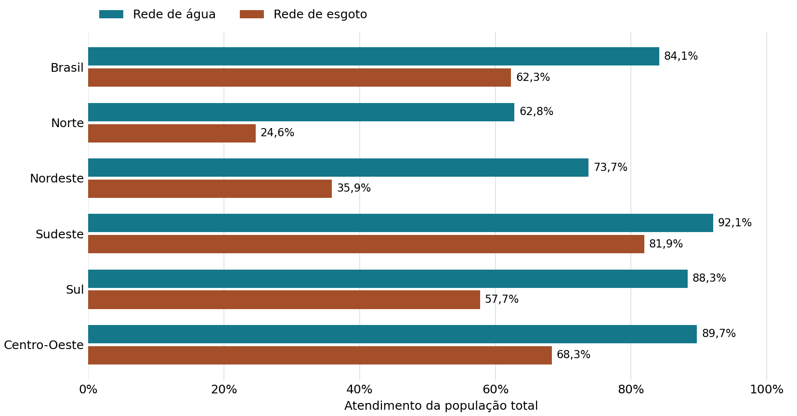
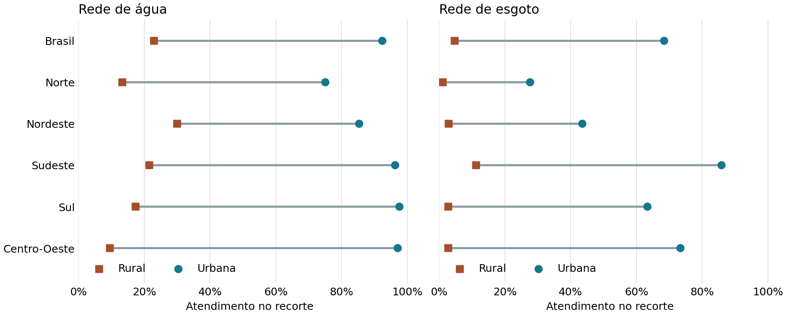

Resumo
O abastecimento de água e a coleta de esgoto são serviços complementares, mas o atendimento por rede varia de forma desigual no Brasil. Este estudo compara os indicadores do Sistema Nacional de Informações em Saneamento Básico (SINISA 2025), ano de referência 2024, em três escalas: macrorregiões e unidades federativas, áreas urbanas e rurais e municípios. Foram utilizadas quatro planilhas oficiais. A rotina em Python padronizou os campos, registrou valores não calculados e cruzou os municípios por código IBGE. No consolidado nacional, a rede de água atendeu 84,14% da população de referência do módulo e a rede de esgoto, 62,30% da população de referência do seu módulo. O Norte apresentou a maior diferença regional entre as duas taxas, de 38,16 pontos percentuais. No recorte rural nacional, os percentuais foram 22,88% para água e 4,75% para esgoto. Em 2.710 municípios com ambos os indicadores totais válidos, a diferença mediana foi de 10,82 pontos percentuais, e o coeficiente de Pearson foi de 0,493. As diferenças mostram onde o atendimento por redes se distancia mais, observadas a participação desigual dos municípios e a exclusão de soluções alternativas do recorte.
Palavras-chave — saneamento básico, abastecimento de água, esgotamento sanitário, desigualdade territorial, SINISA.
1. Introdução
Ter acesso à água por rede e contar com coleta de esgoto são dimensões complementares do saneamento. Examinar uma taxa isolada pode esconder diferenças entre serviços e entre territórios. O SINISA publica indicadores que permitem comparar essas dimensões com recortes definidos de população e território. Neste trabalho, analisamos o atendimento por redes no ano de referência 2024.
- RQ1 — Como a diferença entre os indicadores totais de água e esgoto varia entre macrorregiões e UFs?
- RQ2 — Quanto o atendimento urbano difere do rural em cada serviço?
- RQ3 — Nos municípios com ambos os indicadores válidos, qual é a dispersão das diferenças e como os dois indicadores se associam?
2. Metodologia e pipeline de dados
A fonte é a publicação SINISA 2025 do Ministério das Cidades, com dados de 2024. Foram usadas as planilhas municipais de água (retificação de maio de 2026) e esgoto, além dos respectivos consolidados oficiais por UF, macrorregião e Brasil. Os códigos IAG0001–IAG0003 e IES0001–IES0003 correspondem ao atendimento da população total, urbana e rural em cada serviço.
A rotina usa pandas para ler os XLSX e localizar o cabeçalho pelos códigos de indicador. O código IBGE é mantido como texto de sete dígitos. Percentuais são convertidos em números de 0 a 100. Marcadores de divisão por zero e condições não atendidas são registrados na auditoria e convertidos em campos vazios nos CSVs. Zeros numéricos permanecem válidos.
A união por código IBGE preserva os registros exclusivos de cada módulo. Dos 5.149 códigos na união, 2.744 aparecem nas duas planilhas, e 2.710 têm os dois indicadores totais válidos. A dispersão e as correlações usam esses pares. Nos consolidados, a chave combina nível, sigla e território para distinguir, por exemplo, Sergipe de Sudeste.
O trecho de src/etl.py mostra o cruzamento e a diferença em pontos percentuais.
pares = agua.merge(esgoto, on="ibge", how="outer",
suffixes=("_agua", "_esgoto"),
indicator="presenca", validate="one_to_one")
pares["diferenca_total_pp"] = (
pares["agua_total_pct"] - pares["esgoto_total_pct"]
)3. Resultados e discussão
RQ1 · Diferenças entre regiões e UFs
A diferença nacional foi de 21,84 p.p. O Norte teve o maior valor regional (38,16 p.p.), seguido do Nordeste (37,80 p.p.). A comparação com o Sudeste (10,17 p.p.) mostra que um valor nacional único encobre situações distintas. No Norte, o indicador de esgoto foi 24,65%, ante 81,94% no Sudeste.

Entre as UFs, o Amapá teve a maior diferença, 62,00 p.p. (71,29% em água e 9,29% em esgoto). São Paulo teve a menor, 4,08 p.p. (97,36% e 93,28%). A leitura conjunta dos dois percentuais evita confundir uma diferença pequena com atendimento alto.
Ver percentuais do Brasil e das macrorregiões
| Território | Água (%) | Esgoto (%) | Diferença (p.p.) |
|---|---|---|---|
| Brasil | 84,14 | 62,30 | 21,84 |
| Norte | 62,81 | 24,65 | 38,16 |
| Nordeste | 73,70 | 35,90 | 37,80 |
| Sudeste | 92,11 | 81,94 | 10,17 |
| Sul | 88,32 | 57,72 | 30,60 |
| Centro-Oeste | 89,71 | 68,31 | 21,40 |
RQ2 · Atendimento urbano e rural
No Brasil, a diferença urbano–rural foi de 69,44 p.p. para água (92,32% ante 22,88%) e 63,69 p.p. para esgoto (68,44% ante 4,75%). Entre as macrorregiões, o maior hiato em água apareceu no Centro-Oeste (87,51 p.p.). Para esgoto, o maior ocorreu no Sudeste (74,57 p.p.), que também registrou a maior taxa rural de coleta entre as regiões (11,23%).

O Norte teve a menor diferença regional em esgoto, 26,63 p.p., mas os dois percentuais foram baixos (27,68% urbano e 1,05% rural). A distância entre as taxas e o nível de cada taxa respondem a perguntas diferentes. A análise é restrita às redes. As soluções locais, como poços e fossas, exigem outros indicadores.
RQ3 · Variação entre municípios
Entre os 2.710 municípios com pares válidos, a diferença mediana foi de 10,82 p.p. O intervalo entre o primeiro e o terceiro quartis foi de 0,69 a 35,025 p.p., com desvio-padrão de 26,42 p.p. As correlações de Pearson (0,493) e Spearman (0,541) indicam associação positiva, com dispersão mesmo entre municípios com atendimento de água parecido.
O critério de 1,5 intervalo interquartil identificou 48 extremos (8 abaixo e 40 acima). Foram mantidos, pois o critério é descritivo e os valores estão na faixa válida. Ulianópolis (PA) apresentou 99,75 p.p. de diferença, enquanto Cuparaque (MG) apresentou −66,20 p.p. Em 334 municípios, o indicador de esgoto superou o de água.
A distribuição dos pares foi desigual. O Sudeste concentrou 1.439 observações (53,1%) e o Norte teve 62 (2,3%). O tamanho da amostra e a seleção por disponibilidade precisam ser considerados ao comparar a dispersão regional. Os coeficientes são descritivos para o conjunto observado.
Ver contagens e quartis por macrorregião
| Região | Pares | Q1 (p.p.) | Mediana (p.p.) | Q3 (p.p.) |
|---|---|---|---|---|
| Norte | 62 | 13,92 | 34,10 | 47,87 |
| Nordeste | 573 | 13,41 | 36,25 | 54,95 |
| Sudeste | 1.439 | 0,00 | 3,55 | 13,62 |
| Sul | 444 | 8,07 | 25,79 | 52,84 |
| Centro-Oeste | 192 | 4,84 | 20,59 | 43,56 |
4. Conclusão
O atendimento total por redes de água e esgoto apresentou as maiores diferenças no Norte e no Nordeste. Os percentuais rurais ficaram abaixo dos urbanos em ambos os serviços. No conjunto municipal pareado, a associação positiva conviveu com grande dispersão, inclusive com municípios em que o indicador de esgoto superou o de água.
O recorte depende da participação no SINISA, dos indicadores calculáveis e de um único ano de referência. Uma etapa futura pode incorporar as soluções alternativas do módulo de Gestão Municipal e verificar a estabilidade dos resultados em outras edições, observando mudanças de metodologia.
5. Disponibilidade dos dados e declaração FAIR
- Localizável
- Autoria, fonte, edição e palavras-chave estão no artigo e no README.
- Acessível
- GitHub e GitHub Pages públicos. Os arquivos oficiais podem ser obtidos sem credenciais.
- Interoperável
- CSV UTF-8 e auditoria JSON, com tipos, unidades e chaves documentados.
- Reutilizável
- Código MIT, texto e figuras CC BY 4.0, versões fixas e verificação dos XLSX por SHA-256. A fonte oficial mantém a atribuição original.
Planilhas brutas · Dados processados e auditoria · Dicionário
Com Python 3.12, os comandos abaixo executam a preparação dos dados, a geração das figuras e a análise exploratória.
git clone https://github.com/daflon-prognum/lasalle.git
cd lasalle/projeto-saneamento-sinisa
python3.12 -m venv .venv
source .venv/bin/activate
python -m pip install -r requirements.txt
python -m src.etl
python -m src.analise
jupyter execute notebooks/analise_exploratoria.ipynb --inplace
python -m http.server 8000 --directory docs6. Referências
- BRASIL. Ministério das Cidades. Resultados SINISA 2025. Brasília, DF, 2025. Ano de referência 2024. Acesso em: 13 nov. 2026. Portal oficial.
- BRASIL. Ministério das Cidades. SINISA 2025: Abastecimento de Água. Brasília, DF, 2025. Relatório · Glossário de indicadores.
- BRASIL. Ministério das Cidades. SINISA 2025: Esgotamento Sanitário. Brasília, DF, 2025. Relatório · Glossário de indicadores.
- WILKINSON, M. D. et al. The FAIR Guiding Principles for scientific data management and stewardship. Scientific Data, v. 3, 160018, 2016. DOI 10.1038/sdata.2016.18.
- PANDAS DEVELOPMENT TEAM. pandas.read_excel. Documentação, versão 2.3.3. Acesso em: 13 nov. 2026. Referência da API.
- PLOTLY TECHNOLOGIES INC. Interactive HTML export in Python. Documentação. Acesso em: 13 nov. 2026. Manual.